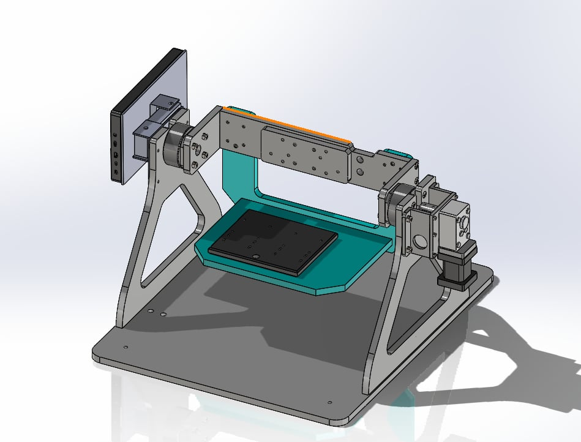
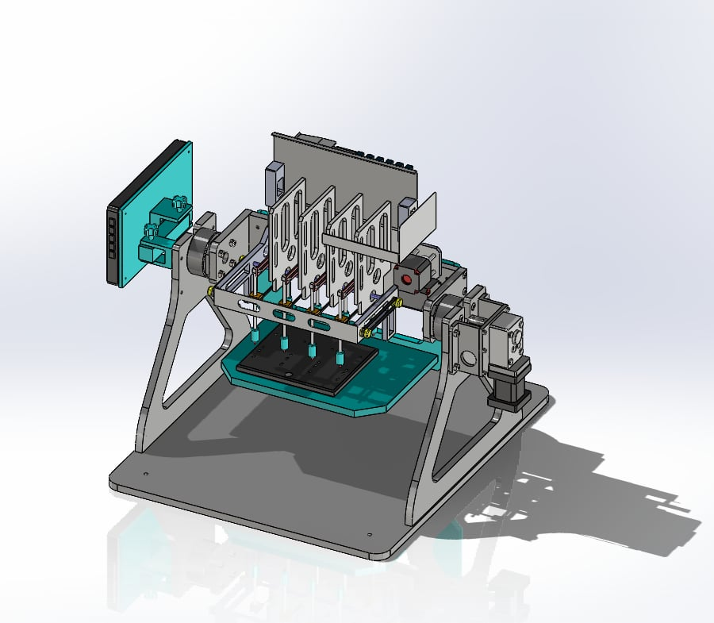
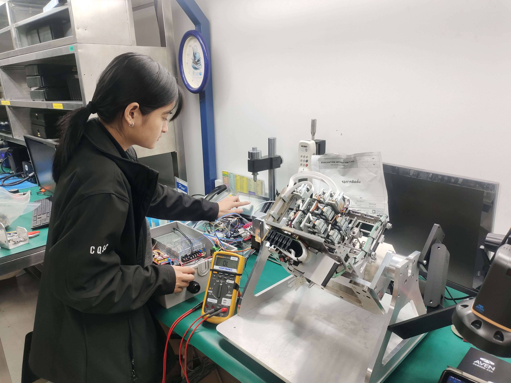
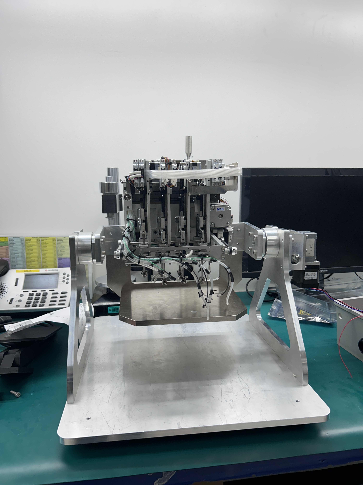
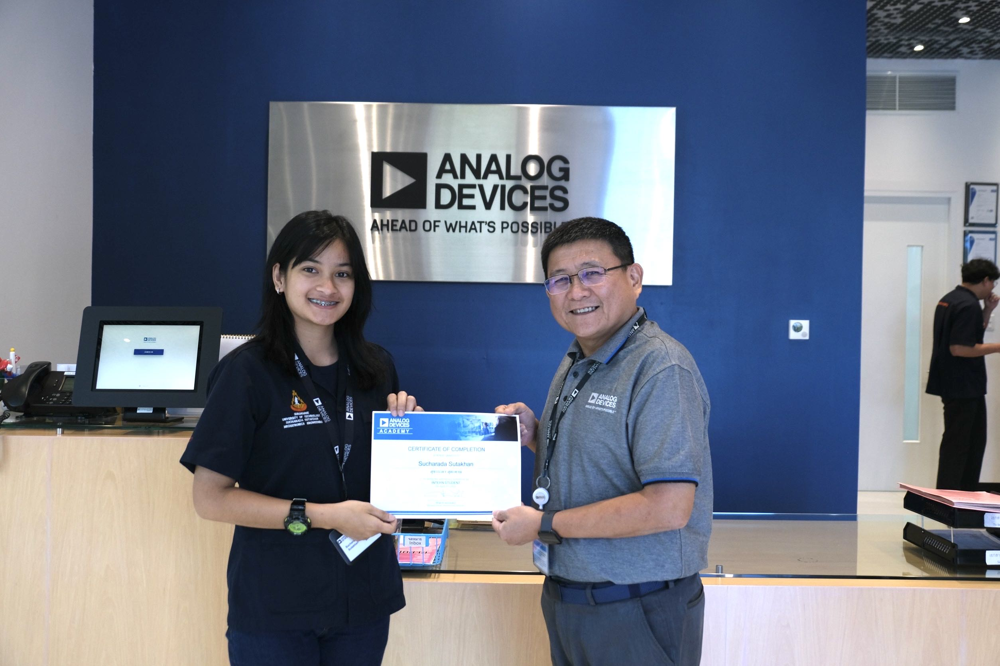
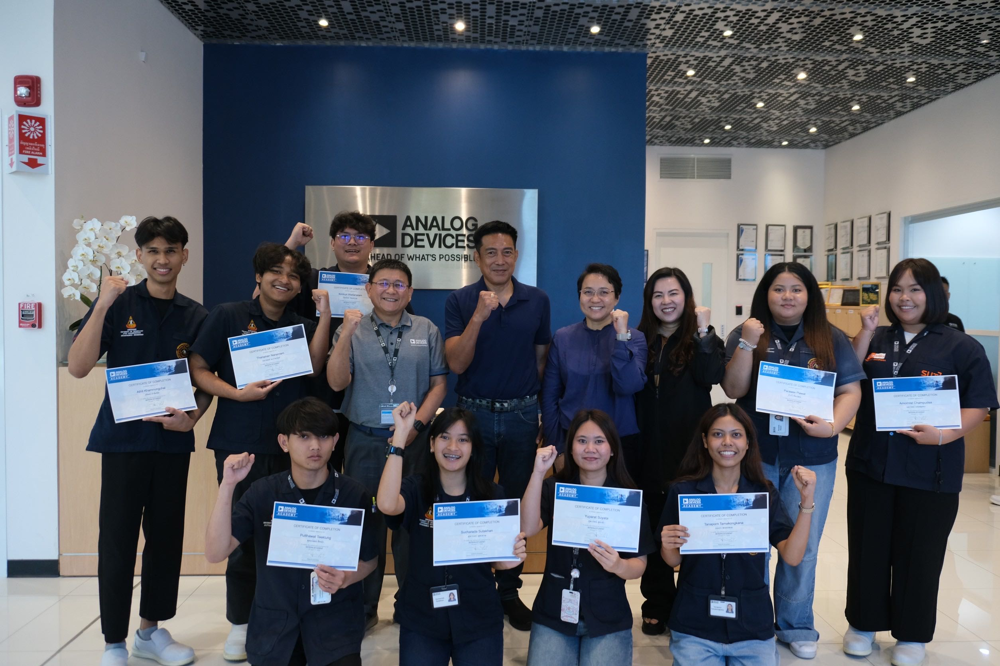

Sucharada Sutakhan
สุชาระดา สุตะคาน

Information
- ชื่อ : สุชาระดา สุตะคาน
- ชื่อเล่น : เนย
- วัน/เดือน/ปีเกิด : 1 พฤศจิกายน พ.ศ.2546
- อายุ : 21
- สัญชาติ : ไทย
- ศาสนา : พุทธ
Education
โรงเรียนเบญจมราชูทิศ จังหวัดจันทบุรี
- จบปีการศึกษา 2564 | เกรดเฉลี่ย 3.54
มหาวิทยาลัยเทคโนโลยีสุรนารี
- จบปีการศึกษา 2567 | เกรดเฉลี่ย 2.80
About me
- ดิฉันมีความสามารถในด้านวิศวกรรมเมคาทรอนิกส์และการเขียนโปรแกรมคอมพิวเตอร์ ในปี 2021
ได้เคยเข้าร่วมการแข่งขันออกแบบอุปกรณ์ตรวจจับความปลอดภัยซึ่งช่วยเสริมทักษะด้านการแก้ปัญหาเชิงปฏิบัติและการบูรณาการระบบ
ปัจจุบันฉันกำลังมองหาโอกาสในการทำงานด้านเมคาทรอนิกส์ วิศวกรรมเครื่องกล
อิเล็กทรอนิกส์ และวิศวกรรมไฟฟ้า
Experiences
🗓️ 2019 - 2021 โรงเรียนเบญจมราชูทิศ จันทบุรี
- พัฒนาโปรโตไทป์ “ระบบจองห้องพักและรีสอร์ท” โดยใช้บอร์ด ESP32 และ Arduino
และนำเสนอผลงานในงานแข่งขัน STEM ของโรงเรียนเบญจมราชูทิศ จังหวัดจันทบุรี
🗓️ 2022 - 2024 มหาวิทยาลัยเทคโนโลยีสุรนารี
- ออกแบบและประกอบเครื่องนับจำนวนคอยล์ โดยใช้เครื่องจักรอุตสาหกรรม
ใช้วัสดุอลูมิเนียมและเหล็กในการสร้างอุปกรณ์ต้นแบบขนาดเล็ก
🗓️ สิงหาคม 2024 - เมษายน 2025 Analog Devices, Inc. นักศึกษาฝึกงาน
- ออกแบบเครื่องมือแบบโมดูลาร์เพื่อลดเวลาในการบำรุงรักษาชิ้นส่วนของแขนกลจับวัตถุ
(gripper module) โดยบูรณาการระบบอัตโนมัติเพื่อให้สามารถหมุนอุปกรณ์เพื่อ
ทำความสะอาดได้ง่ายขึ้น
และรองรับการจัดการชิ้นส่วนรวมถึงการสอบเทียบอุปกรณ์
My Achievements
P&P module replacement time reduction by special tool






ระบบฟาร์มอัจฉริยะตรวจสุขภาพพืชด้วย AI (Smart Farm Project)